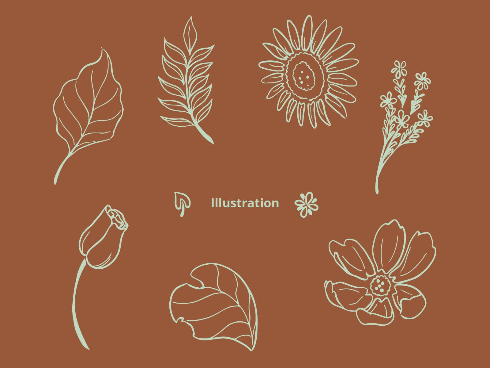
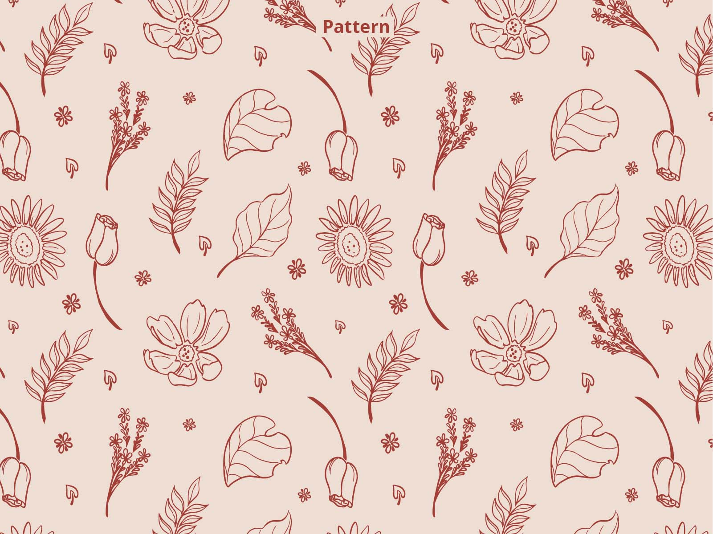
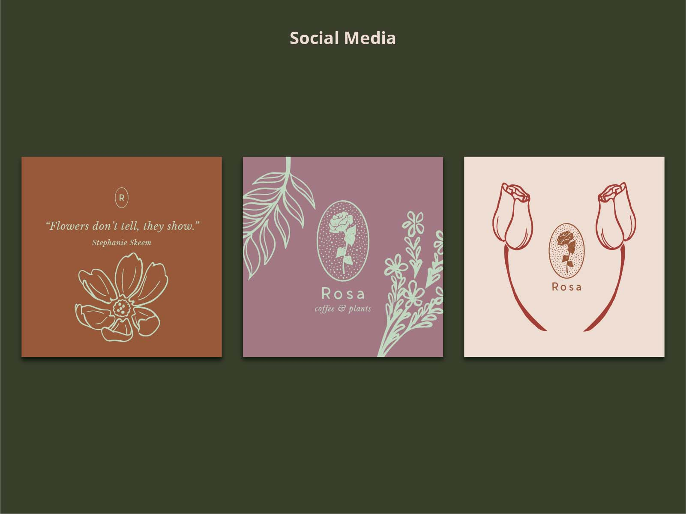
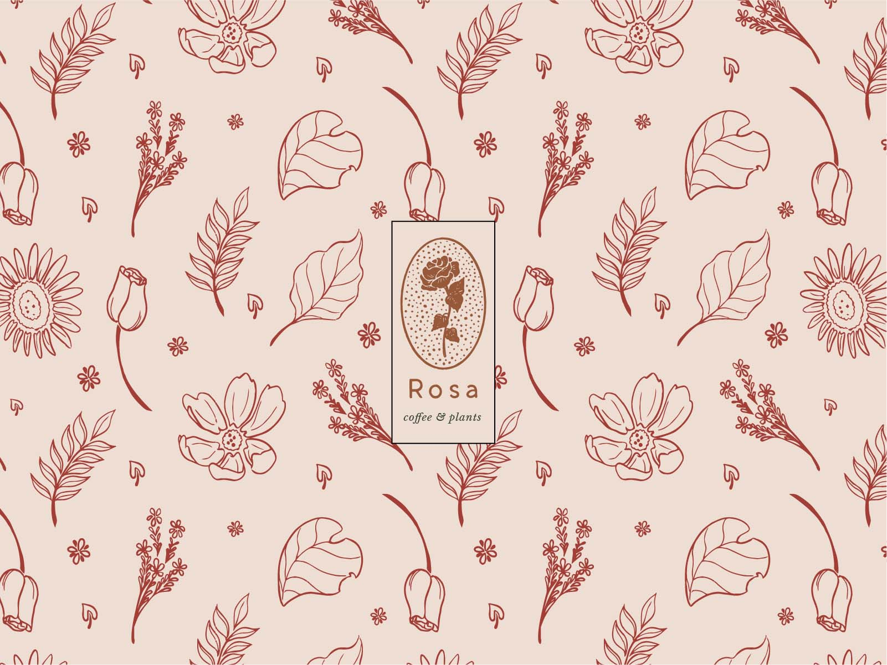
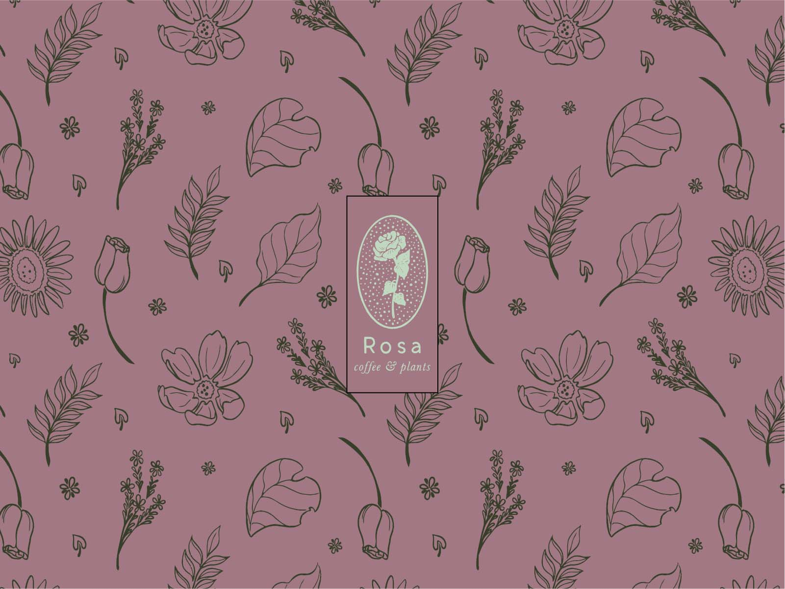
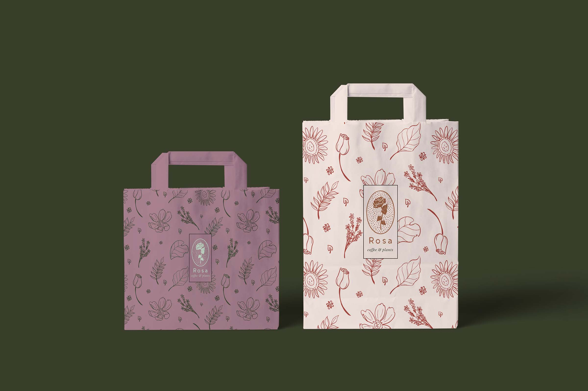
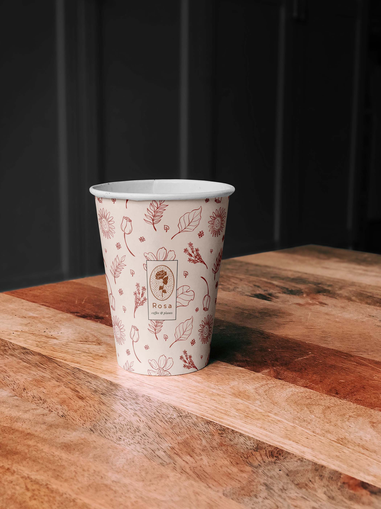

This project is for a brief from Briefbox for a flower shop and café. The goal was to create a set of plant illustrations to use both individually, and in a pattern for use on napkins, take-away cups, and bags. I aimed for a relaxed, hand-drawn feel. The illustrations were sketched and inked in Clip Studio Paint, then image traced via Adobe Illustrator. I used these individual illustrations and arranged them into a seamless pattern. I attempted to create something that looked pleasing without making it too cluttered. The pattern was turned into a swatch for ease of use.
       BACK TO PORTFOLIO